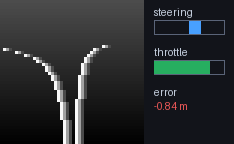
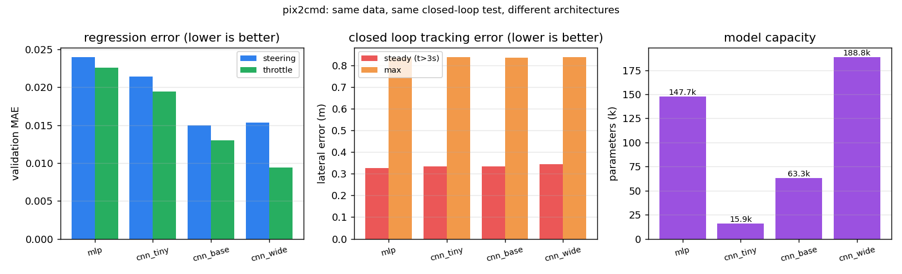
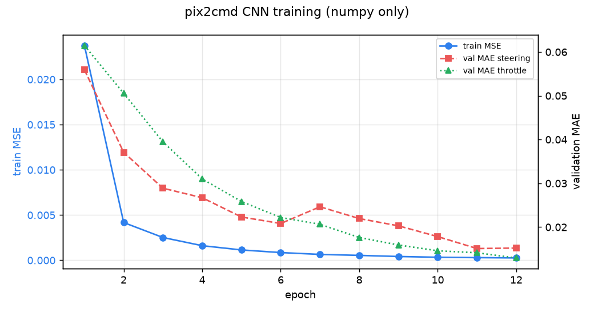
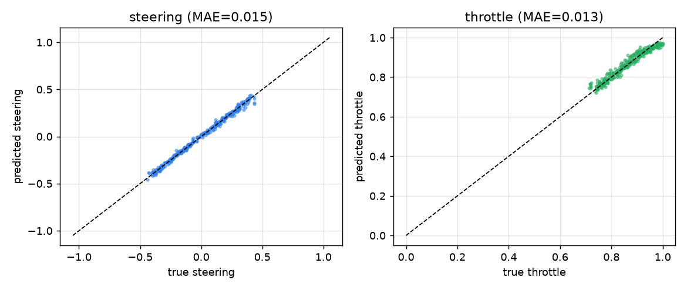
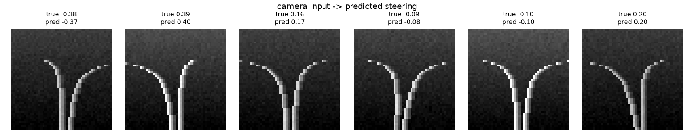

无人车端到端驾驶：相机图像到控制指令（pix2cmd）
对应课程任务（4）：每种机器人端到端模型（输入图像、输出控制指令）。 本模块实现"相机图像 → (转向, 油门)"的端到端映射，包含神经网络的训练、测试与 ROS 封装， 全程使用 numpy 实现卷积网络的前向与反向传播，不依赖 PyTorch / TensorFlow，也不需要 GPU。

1. 功能目标
- 数据：用针孔相机模型合成带曲率与横向偏移的道路图像，标签由纯追踪控制器给出。
- 网络：两层卷积 + 两层全连接的小型 CNN，输出转向（tanh）与油门（sigmoid）。
- 训练：手写反向传播 + Adam，纯 numpy，CPU 上约 20 秒收敛。
- 闭环验证：把网络放回控制回路里，沿 S 形弯道行驶，统计横向误差与车道保持率。
- ROS 封装：
/pix2cmd/camera发布图像，/pix2cmd/cmd发布控制量，/pix2cmd/state发布状态。
2. 与已有模块的区别
| 已有模块 | 已有能力 | 本模块的区别 |
|---|---|---|
| #128 carla_traffic_sign_recognition | YOLOv8 识别交通标志（分类），不输出控制量 | 本模块输出的是连续控制量（转向+油门），属于端到端回归而非检测 |
| #184 carla_yolo_avoidance | 三节点感知→决策→控制，规则阈值决策 | 本模块的决策由神经网络直接给出，无阈值规则 |
| #183 carla_mapping_navigation | 激光雷达建图 + MLP 规划（5 维状态输入） | 本模块输入是原始图像（48×48 像素），不是手工特征 |
| #280 carla_end_to_end_nn | CARLA 相机 60×80×3 → numpy CNN → 转向 | 本模块额外提供同一任务、四种结构的定量对比（MLP / tiny / base / wide）与直线回正动力学问指标，且不依赖 CARLA |
| #129 carla_pilotnet_ros | PilotNet（PyTorch .pth）离线推理 + ROS 封装 |
本模块从数据生成到训练全程可复现（无预训练权重、纯 numpy、CPU 约 2 s/结构），便于逐项对照 |
传统 ad_agent / 路径点跟踪 |
基于地图与规则规划 | 本模块不使用地图与规则，完全由像素驱动 |
3. 计算原理
3.1 相机成像模型
相机固定在车头，高度 ，焦距 。道路上一点在世界坐标中横向偏移 、纵向深度 ， 投影到图像列坐标：
本模块取 、、图像 、地平线在第 15 行，深度从 到 均匀采样。（ 是"该点相对车头轴的横向偏移"）
道路中心线在深度 处的横向坐标为
其中 为曲率、 为道路中心相对车头轴的偏移。左右车道线分别位于 （）， 逐行投影后得到两条车道线的像素位置，叠加亮度扰动与高斯噪声即得到一帧图像。
3.2 标签生成（纯追踪）
给定曲率与偏移，控制量由纯追踪律给出：
即：弯道越急（ 越大）、越偏离中心（ 越大），转向越大；同时按转向幅度降油门。 注意：网络只会看到图像， 与 对它都是隐变量，必须自己从像素里推断出来。
本项目生成 1200 组训练样本与 300 组验证样本，曲率 、 偏移 ，亮度随机缩放 以增加鲁棒性。
3.3 网络结构
输出层拆成两路：
卷积均为 、步长 2，因此每层的空间尺寸为 。总参数量 63,298。
3.4 损失与反向传播
损失为两路输出的均方误差：
对输出层求偏导，注意 与 的导数：
隐含层反传为标准的链式法则，卷积层的关键是用 im2col 把卷积写成矩阵乘法再反传：
其中 为 im2col 展开的列矩阵。 需要 col2im 折叠回特征图尺寸；
当步长小于卷积核时 patch 会重叠，col2im 用累加处理重叠区域，这样梯度才与 im2col 的展开方式严格对应
（单元测试 test_im2col_roundtrip_with_stride_equal_to_kernel 在无重叠情形下验证了可逆性）。
3.5 优化器
采用 Adam，一阶/二阶矩估计与偏差校正：
取 、批大小 32、训练 12 轮。
3.6 闭环动力学
把网络放回回路时，车辆横向位置按简化模型更新（）：
相机看到的道路偏移为 ，即"视觉误差"，网络据此输出修正转向。
4. 算法流程
离线阶段
1. 采样 (κ, e) ──> 渲染 48×48 图像 x ──> 纯追踪标签 (δ, θ)
2. 重复 1200 次得到训练集，300 次得到验证集
3. for epoch in 1..12:
打乱训练集，按批(32)前向 → 计算 MSE → 反向 → Adam 更新
每个 epoch 结束后在验证集上计算 MAE
4. 保存训练曲线、预测散点、样本网格
闭环阶段
5. e ← 初始偏移；for t in 1..120:
κ_t, e_road ← S 形参考轨迹
渲染相机图像（使用 e_road - e）
(δ̂, θ̂) ← 网络前向
e ← e + (γκ - Gδ̂)·Δt
记录横向误差与转向指令，累积成动图帧
6. 输出 GIF 与指标（平均/最大横向误差、车道保持率）
5. 源代码解析
| 文件 | 职责 |
|---|---|
pix2cmd/dataset.py |
相机投影 render()、纯追踪标签 label()、数据集 make_dataset()、S 形参考轨迹 road_profile() |
pix2cmd/cnn.py |
im2col / col2im、TinyCNN.forward()、TinyCNN.backward()、Adam TinyCNN.step() |
pix2cmd/train.py |
训练循环 train()、闭环驾驶 closed_loop_drive()、三张图与 GIF 的输出 |
pix2cmd/arch_sweep.py |
结构对比：MLPBaseline、通用训练 train_net()、直线回正 recovery_test()、对比图与 CSV |
pix2cmd/node.py |
ROS 节点：启动时训练一次，之后按 10 Hz 发布图像与控制指令 |
main.py |
课程约定入口：--demo / --test / --sweep / --ros |
test/test_pix2cmd.py |
17 项离线单元测试（不需要 ROS / CARLA） |
几个关键实现点：
im2col直接切片的技巧：x[:, i:i+stride*ho:stride, ...]一次性取出所有 patch 的第 个元素， 避免 Python 双层循环遍历每个输出位置。col2im必须累加：步长 2、核 3 时相邻 patch 在边界处重叠，重叠像素要累加梯度而不是覆盖。- 输出层的激活与损失匹配：转向用
tanh（值域 正好是归一化转向），油门用sigmoid（值域 ）。 - 闭环时不做 batch：每步只推理单帧，
predict()内部按 128 分批以兼容离线评估。
6. 运行步骤
6.1 环境
- Python 3.8+（已在 Python 3.8.10 / 3.10.6 / 3.11.15 验证）
numpy、matplotlib、pillow- 可选：ROS 2 Humble 或 ROS Noetic（仅
--ros模式需要） - 不需要 CARLA / AirSim / Gazebo，也不需要 GPU
pip3 install -r requirements.txt
6.2 离线演示（推荐先跑这个）
cd src/ground/pix2cmd_end2end_driving
python3 main.py --demo --output-dir results
终端会逐轮打印训练损失与验证 MAE，结束后在 results/ 下得到：
| 文件 | 内容 |
|---|---|
training_curve.png |
训练 MSE 与验证 MAE 曲线 |
predictions.png |
验证集上预测值 vs 真值散点 |
samples.png |
6 帧相机输入及预测转向 |
drive_demo.gif |
闭环驾驶动图（120 帧，约 144 KB） |
metrics.json |
全部指标 |
6.2.1 结构对比实验
python3 main.py --sweep --output-dir results
一条命令依次训练 mlp / cnn_tiny / cnn_base / cnn_wide 四种结构（同一数据集、同一超参、同一闭环评价），
输出 results/arch_comparison.csv 与 results/arch_comparison.png，并在终端打印对比表。
CPU 上四种结构合计约 12 s。
6.3 单元测试
python3 main.py --test
# 或
python3 -m pytest -q test
预期输出：17 passed。
6.4 ROS 2 运行
colcon build --packages-select pix2cmd_end2end_driving --symlink-install
source install/setup.bash
ros2 launch pix2cmd_end2end_driving main.launch.py
另一个终端观察输出：
ros2 topic echo /pix2cmd/cmd # [steering, throttle]
ros2 topic echo /pix2cmd/state # 带横向误差的可读状态
ros2 topic hz /pix2cmd/camera # 相机图像发布频率
节点启动时会先训练网络（默认 800 样本 8 轮），日志里会打印验证 MAE，然后开始按 10 Hz 发布。
7. 不同网络结构对比（结构消融）
课程要求中包含"同样的任务、不同的模型结构对比"。本节在完全相同的数据集、超参数与闭环评价流程下 比较四种结构，回答两个问题：卷积到底值不值？容量继续加大还有没有收益？
7.1 四种结构
| 结构 | 组成 | 参数公式 |
|---|---|---|
mlp |
flatten(48×48=2304) → FC(64) → ReLU → FC(2) | |
cnn_tiny |
Conv(3×3,4,s2) → Conv(3×3,8,s2) → FC(16) → FC(2) | |
cnn_base |
Conv(3×3,8,s2) → Conv(3×3,16,s2) → FC(32) → FC(2) | 同上 |
cnn_wide |
Conv(3×3,12,s2) → Conv(3×3,24,s2) → FC(64) → FC(2) | 同上 |
其中 为两个卷积层的通道数， 为全连接隐层宽度， 为第二层卷积输出的空间边长
（48 → 23 → 11）。mlp 与 CNN 的唯一差别是没有局部感受野与权值共享，因此它就是这个消融实验的对照组。
cnn_base 中 ，代入 ：
与程序输出的 params = 63298 一致（该数字由测试 test_mlp_baseline_param_count_matches_formula
一类公式校验覆盖）。
7.2 评价协议
- 训练集/验证集：同一
seed生成的 1200 / 300 张图像，四种结构看到的是逐像素相同的数据。 - 优化：Adam，，batch 32，12 轮，初始化种子相同。
- 回归指标：验证集转向/油门 MAE。
- 闭环指标：S 形弯道 120 步的稳态横向误差（跳过前 3 s 暂态）与最大横向误差。
- 回正指标：直线路段从 1.0 m 初始偏差出发，误差首次降到 0.1 m 以内所需时间（回正时间）与超调量。 这一项只考验"看到偏移 → 打方向"这条最本质的映射，比 S 形弯道更能区分模型精度。
7.3 结果
Windows 11 + Python 3.10.6 + numpy 2.2.6，单核 CPU，一次运行的结果：
| 结构 | 参数量 | 训练耗时 | MAE(转向) | MAE(油门) | 稳态误差 | 最大误差 | 回正时间 | 超调 | 车道保持率 |
|---|---|---|---|---|---|---|---|---|---|
mlp |
147,650 | 1.5 s | 0.0240 | 0.0226 | 0.327 m | 0.835 m | 2.9 s | 0.017 m | 90% |
cnn_tiny |
15,874 | 1.4 s | 0.0214 | 0.0194 | 0.334 m | 0.837 m | 5.8 s | 0.000 m | 88% |
cnn_base |
63,298 | 2.3 s | 0.0150 | 0.0130 | 0.333 m | 0.836 m | 2.9 s | 0.025 m | 90% |
cnn_wide |
188,786 | 4.0 s | 0.0153 | 0.0094 | 0.345 m | 0.838 m | 3.2 s | 0.000 m | 85% |

7.4 结论
- 卷积带来的收益大于参数量的收益：
cnn_base用mlp约 43% 的参数量，把转向 MAE 从 0.0240 降到 0.0150（−37%）。MLP 把每个像素都当作独立特征，2304×64 的第一层几乎全部参数都花在 与图像平移无关的位置上，泛化不如权值共享。 - 容量继续加大收益递减：
cnn_wide参数量是cnn_base的 3 倍，转向 MAE 反而略高（0.0153）， 油门 MAE 才有改善（0.0130 → 0.0094）。瓶颈已经不在容量，而在数据与标签（纯追踪律本身有饱和）。 - 容量不足会直接体现在闭环恢复时间上：
cnn_tiny的 MAE 只比cnn_base差 43%，但直线回正 时间从 2.9 s 拉长到 5.8 s——闭环对精度误差是放大的，这也是端到端系统必须做闭环评价、 不能只看回归指标的原因。 - 变道超调都很小（≤0.025 m）：四种结构学到的都是平滑的转向映射，没有出现 bang-bang 式抖动。
说明：闭环稳态误差四种结构都在 0.33 m 左右，因为它主要由道路曲率与简化动力学模型 之间的偏差决定，而不是由网络精度决定——这正是第 3 条结论要强调的地方。
8. 实测结果
训练 12 轮、1200 训练样本 / 300 验证样本（Windows 11 + Python 3.10.6，CPU）：
| 指标 | 数值 |
|---|---|
| 参数量 | 63,298 |
| 训练 MSE（第 1 轮 → 第 12 轮） | 0.02374 → 0.00026 |
| 验证 MAE（转向） | 0.0152（转向值域 ，约 1.5% 满量程） |
| 验证 MAE（油门） | 0.0130 |
闭环驾驶（120 步，S 形弯道，初始横向偏移 0.9 m）：
| 指标 | 数值 |
|---|---|
| 平均横向误差 | 0.31 m |
| 最大横向误差 | 0.84 m |
| 车道保持率（误差 < 0.6 m 的时间占比） | 90% |
| 平均转向幅度 | 0.12 |



结论：网络在未见过的场景上把转向误差压到 0.015，闭环能把初始 0.9 m 的偏移拉回车道内并保持在 90% 的时间以内， 说明它确实从像素中学到了"车道曲率 + 横向偏移"这两个隐含量，而不是记住了训练样本。
9. 局限与后续
- 目前用合成道路训练，尚未接入 CARLA 相机；接入时只需把
render()换成carla相机回调， 其余训练与推理代码不变（这是把数据生成与网络解耦的原因）。 - 闭环动力学是简化模型（横向速度正比于转向），不是完整车辆动力学；接入 CARLA 后应改用其物理仿真。
- 未做多场景泛化对比（雨天/夜间/不同车道宽度），后续可加数据增强并给出对比表格。
10. 大模型声明
本模块开发过程中使用了 DeepSeek 辅助生成代码与文档；提交者已实测训练、测试与闭环演示， 对提交内容负全部责任。